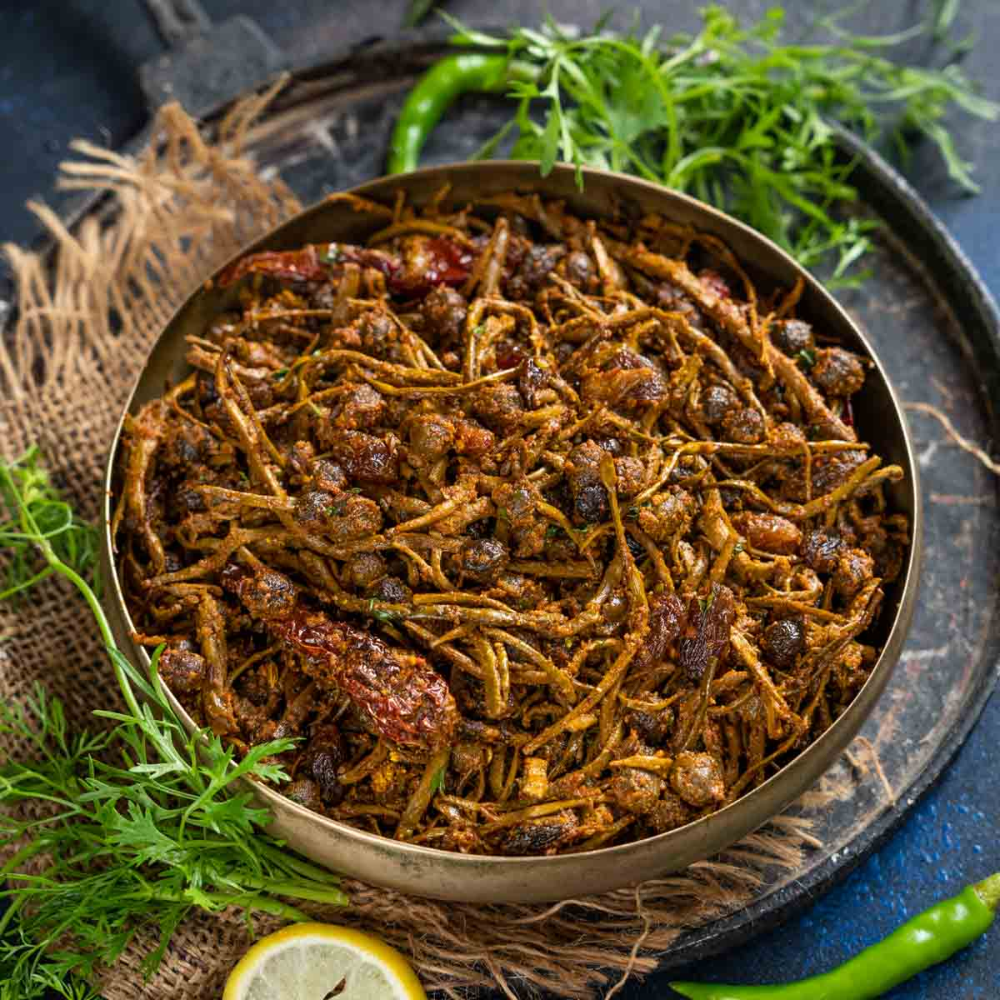
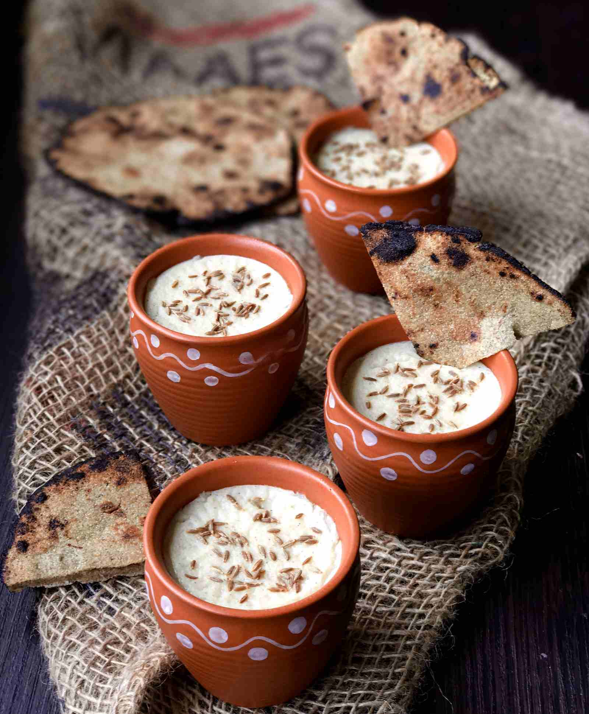

Dal Bhati Churma

This is the sate's classic signature dish. Batti is hard, unleavened bread cooked in the desert areas of Rajasthan. Batti is prized mainly for its long self life, plus it requires hardly any churma is a coarsely ground wheat mixture crushed and cooked in ghee and jaggery or sugar. water for its preparation. It is always eaten with dal(lentil curry). The dal is made of lentils while
Gatte ki Sabzi

Most of Rajasthani cusine come to fruition as a result of the arid conditions. For this dish you don't need any fresh vegetables and that's its speciality. This curry is made with gram flour dumplings(steamed and lightly fried) and tangy gravy made up of tomato, buttermilk and spices. It's best enjoyed with rotis (Indian flat bread) and rice.
Laal Maans
In this predominantly vegetarian state, the famous non-vegetarian dish is laal maans. Lala maans literally means "red meat" and the dish got its name because of its red colour. Traditionally, laal maans used to be made with wild boar or deer. Today, it consists of marinated spicy mutton curry cooked on a low heat in a fiery sauce of red chillies, garlic paste, sliced onions and curds. A must-try for meat eaters.
Ker Sangri
One of the most popular Rajasthani dishes, ker is a wild berry that is tangy and peppery while sangri is a type of long bean grown abundantly in the desert areas of Jaisalmer and Barmer. Sangri is a mainstay during drought, when little else is available as it is 53% protein. The villagers took these vegetables home and due to the scarcity of water cooked them in vegetable oil with spices. They ate this wonderful concoction with their bajra rotis. Today they cook it with buttermilk or water.
Raab
This is a thick broth made from millet (bajra) flour and buttermilk, which is heated and fermented. Bajra flour and buttermilk are put in an earthen pot and mixed to make a thick sauce. This is then left to simmer over a low flame for several hours until fully cooked. It is then eaten, usually as a soup. A variant is "makki ki raab", or com raab, in which boiled com kemels are added.